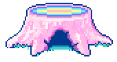
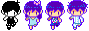

OMORI
- это сюрреалистический психологический хоррор, сделанный на платформе RPG Maker.
Игра разрабатывалась в течение шести с половиной лет под руководством художника под псевдонимом Omocat. Изначально Omori задумывалась как графический роман, но Omocat принял решение создать видеоигру, которая позволит людям делать выбор по ходу истории. В 2014 году была запущена кампания игры на Kickstarter, в итоге которой 5190 спонсоров пожертвовали на разработку более 200 тысяч USD.
25 декабря 2020 года, спустя шесть лет после кампании на Kickstarter, игра была выпущена на macOS и Windows. Изначально она была доступна только на английском языке, однако 16 декабря 2021 года появилась японская локализация. 18 марта 2022 года была добавлена поддержка упрощённого китайского и корейского языков. К сожалению, данных о русской локализации на момент октября 2025 года нет. До этого момента для русских игроков выходом остается использование любительских переводов.
Основной сюжет
Сюжет Omori рассказывает о мальчике-хикикомори по имени Санни и его альтер-эго из мира снов, Омори. Игроку предстоит исследовать как реальный, так и сюрреалистичный мир снов, где Санни, играя за Омори, пытается справиться с психологической травмой и подавленными воспоминаниями, связанными с трагической смертью его сестры Мари. Игра затрагивает темы дружбы, потери и борьбы с депрессией, а выбор игрока влияет на концовку.
Основные моменты сюжета
Двойная жизнь: Игрок управляет Санни в реальном мире и его альтер-эго Омори в «Мире Снов» (Headspace).
Психологическая травма: В основе сюжета лежит трагедия: сестра главного героя, Мари, погибает во время их ссоры в результате несчастного случая, после чего он и его друзья переживают горе и отчуждение.
Мир снов: Омори исследует красочный, но порой пугающий «Мир Снов» со своими друзьями, чтобы найти ответы и справиться с травмой.
Конфликт с реальностью: Постепенно реальный и вымышленный миры начинают пересекаться, и Санни вынужден столкнуться с правдой о случившемся, чтобы прийти к исцелению.
Несколько концовок: Исход игры зависит от решений, принятых игроком в ходе прохождения, и влияет на то, как Санни справится со своей травмой.
Игровой процесс
Двойная жизнь: Игрок управляет Санни в реальном мире и его альтер-эго Омори в «Мире Снов» (Headspace).
Психологическая травма: В основе сюжета лежит трагедия: сестра главного героя, Мари, погибает во время их ссоры в результате несчастного случая, после чего он и его друзья переживают горе и отчуждение.
Мир снов: Омори исследует красочный, но порой пугающий «Мир Снов» со своими друзьями, чтобы найти ответы и справиться с травмой.
Конфликт с реальностью: Постепенно реальный и вымышленный миры начинают пересекаться, и Санни вынужден столкнуться с правдой о случившемся, чтобы прийти к исцелению.
Несколько концовок: Исход игры зависит от решений, принятых игроком в ходе прохождения, и влияет на то, как Санни справится со своей травмой.
Omori вдохновлена традиционными японскими ролевыми играми. Игрок управляет группой из четырёх персонажей: Омори, Обри, Келом и Хиро. Каждый герой обладает уникальными навыками, которые можно использовать как в бою, так и при путешествии по миру. В игре есть побочные квесты и головоломки, которые можно решать для получения различных наград и навыков.
Во время сражений в Omori используется система по типу «камень-ножницы-бумага». Каждая эмоция сильна или слаба по отношению к другой, например, счастье побеждает злость, но проигрывает грусти.
Концовки
Поскольку жанр Omori - японская ролевая игра, выборы, сделанные игроком в процессе, будут влиять на полученную концовку. Всего в игре предусмотренно пять полноценных концовок: две нейтральные, одна хорошая, одна плохая и одна истинная. Ниже представлена схема концовок и действий, необходимых для их получения.